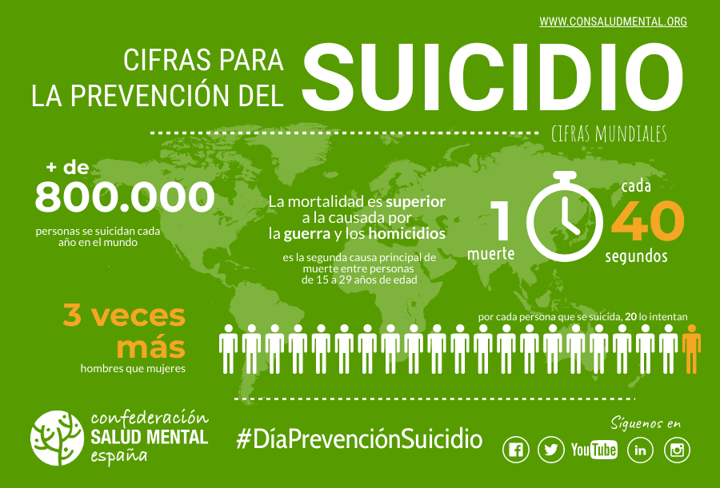
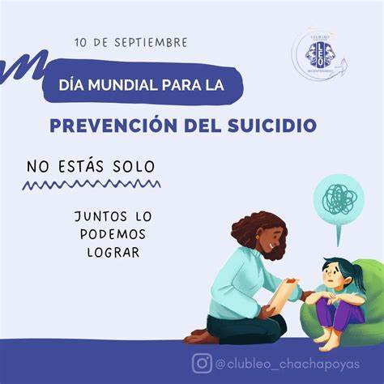
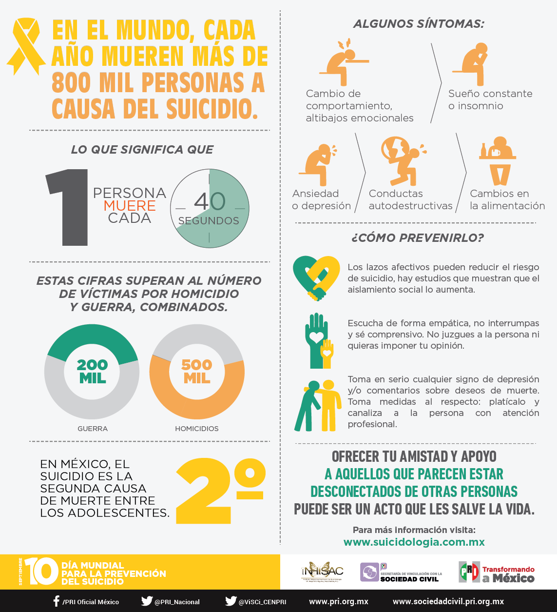

Prevención del suicidio
El suicidio es un problema de salud pública importante pero a menudo descuidado, rodeado de estigmas, mitos y tabúes. Cada caso de suicidio es una tragedia que afecta gravemente no sólo a los individuos, sino también a las familias y las comunidades. Cada año, más de 703.000 personas se quitan la vida tras numerosos intentos de suicidio, lo que corresponde a una muerte cada 40 segundos. Desde que la OMS declaró al COVID-19 como una pandemia en marzo de 2020, más individuos experimentan pérdida, sufrimiento y estrés.

Centrarse en la prevención del suicidio es especialmente importante para crear vínculos sociales, promover la toma de conciencia y ofrecer esperanza. Acercarse a los seres queridos por su salud mental y su bienestar podría salvarles la vida.
Si necesitas hablar con alguien de inmediato, puedes comunicarte con:
- La Línea Nacional de Prevención del Suicidio: (55) 5259-8121
- Un amigo o familiar de confianza
- Un profesional de la salud mental
También puedes hacer clic en el siguiente botón para encontrar recursos adicionales y apoyo:
Más ayuda por favor de apretar aqui
La prevención del suicidio es una preocupación seria y debemos trabajar juntos para brindar ayuda y apoyo a quienes la necesitan. No dudes en buscar ayuda y hablar sobre tus sentimientos y pensamientos.

